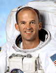

Lyndon B. Johnson Space Center
Houston, Texas 77058
|
National Aeronautics and Space Administration Lyndon B. Johnson Space Center Houston, Texas 77058 |
 |
Biographical Data |
||
Jeffrey N. Williams (COLONEL, U.S. ARMY, RETIRED)
NASA Astronaut
PERSONAL DATA: Born January 18, 1958, in Superior, Wisconsin, but considers Winter, Wisconsin to be his hometown. Married to the former Anna-Marie Moore of Newburgh, New York. They have two adult sons, two daughters-in-law, and three grandchildren. Enjoys running, fishing, camping, skiing, scuba diving and woodworking. Williams’ parents, Lloyd D. and Eunice A. Williams, are deceased.
EDUCATION: Graduated from Winter High School, Winter, Wisconsin, in 1976; received a Bachelor of Science Degree in Applied Science and Engineering from the U.S. Military Academy (USMA) in 1980, a Master of Science Degree in Aeronautical Engineering and the Degree of Aeronautical Engineer from the U.S. Naval Postgraduate School, both in 1987, a Master of Arts Degree in National Security and Strategic Studies from the U.S. Naval War College in 1996, and an honorary Doctorate of Business Administration from Johnson and Wales University in 2007.
ORGANIZATIONS: Society of Experimental Test Pilots, Association of Space Explorers, Army Aviation Association of America, USMA Association of Graduates, Officer Christian Fellowship.
SPECIAL HONORS: Graduated first in U.S. Naval Test Pilot School class 103 in 1993; Admiral William Adger Moffett Award for Excellence in Aeronautical Engineering in 1988, Naval Postgraduate School; Daedalian Foundation Fellowship Award for Graduate Study in Aeronautics in 1985. Awarded two Defense Superior Service Medals, two Legions of Merit, two Meritorious Service Medals, the Army Commendation Medal, three NASA Space Flight Medals, NASA Distinguished Service and Exceptional Service Medals, and various other service awards along with Master Army Aviator, Senior Space and Parachutist badges.
MILITARY EXPERIENCE: As a cadet at USMA, Williams competed on the West Point sport parachute team and also held ratings of sport parachute jumpmaster and instructor. He received his commission as a second lieutenant May 1980 and was designated an Army aviator in September 1981. Williams completed a three-year assignment in Germany where he served in the 3rd Armored Division’s aviation battalion. Following his return to the United States, Williams completed a graduate program in Aeronautical Engineering, and was subsequently selected for an Army assignment at the Johnson Space Center (JSC), where he served in various capacities supporting the Space Shuttle Program. In 1992, Williams attended the Naval Test Pilot School, and subsequently served as an experimental test pilot and the Flight Test Division Chief in the Army’s Airworthiness Qualification Test Directorate at Edwards Air Force Base, California. Williams retired from active duty in 2007 after more than 27 years of service.
Williams has logged approximately 3,000 hours in more than 50 different aircraft.
NASA EXPERIENCE: Williams was selected for the NASA Astronaut Class of 1996. In addition to his space flights, he has performed various technical duties in both the space shuttle and International Space Station Programs. Williams has served in the Extra-Vehicular Activity (EVA), Space Station, and Soyuz Branches of the Astronaut Office, led the development of a space shuttle cockpit upgrade, and completed temporary assignments at Marshall Space Flight Center supporting the test and evaluation of the International Space Station Laboratory Module and at NASA Headquarters in support of legislative affairs. In July 2002, Williams commanded a nine-day coral reef expedition operating from the National Oceanic and Atmospheric Administration’s Aquarius undersea habitat off the coast of Florida. Williams has also served on the space station backup flight crews for Expeditions 12, 19, and 20.
SPACE FLIGHT EXPERIENCE: Williams served as the flight engineer and lead space walker for space shuttle flight STS-101. STS-101 Atlantis (May 19 through May 29, 2000) was the third shuttle mission devoted to space station construction. Objectives for the 10-day flight included transporting and installing over 5,000 pounds of equipment and supplies, and included Williams’ first EVA lasting nearly 7 hours.
In 2006, Williams served as flight engineer for Expedition 13, launching on March 29 on the Russian Soyuz TMA-8 from Baikonur, Kazakhstan and docking with the station on March 31. During the six-month tour of duty aboard the International Space Station, Williams performed two successful space walks (one Russia and one USA) logging an additional 12 hours and 25 minutes of EVA, and also saw the arrival of two space shuttle missions, the resumption of construction of the orbiting laboratory, and the restoration of a three-person expedition crew. The Expedition 13 mission concluded on September 28 with a safe landing in central Kazakhstan.
On his third space flight, Williams served as a Flight Engineer on Expedition 21 and commanded Expedition 22, again launching from Baikonur on Soyuz TMA-16 on September 30 and docking on October 2, 2009. During his second 6-month stay onboard the International Space Station, Williams again saw the arrival of two space shuttle missions as well as the integration of a Russian Mini-Research Module, the US Tranquility Module, and the Cupola. His third flight concluded on March 18, 2010, with the Soyuz landing in Kazakhstan.
During his three flights, Williams logged over 362 days in space, including more than 19 hours in three EVAs.
Williams is currently training as a backup for the one-year flight spanning Expeditions 43-46 beginning in March 2015 and for the prime crew for Expeditions 47 and 48, schedule to launch in March 2016
APRIL 2014